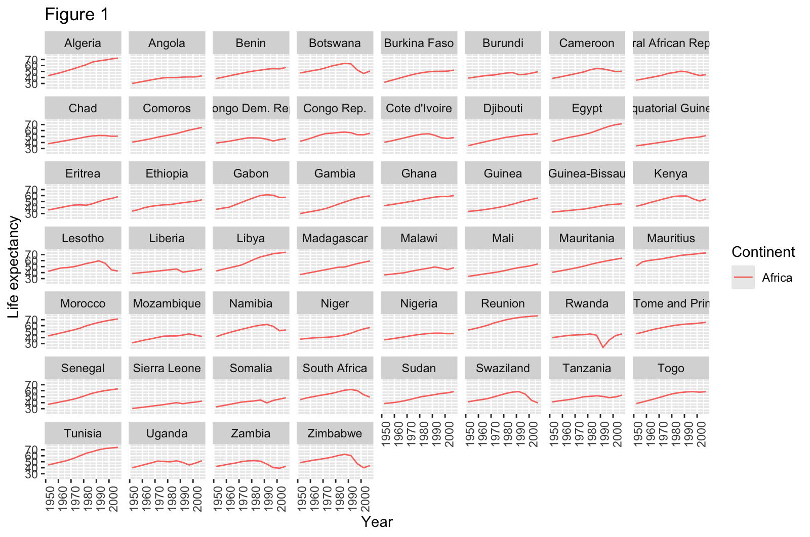
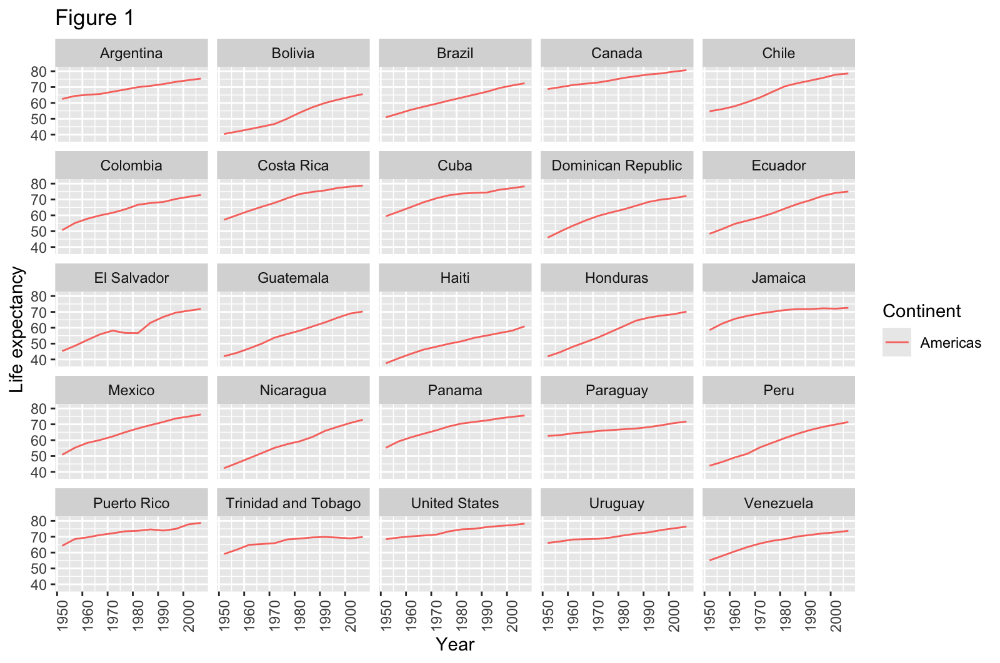

Modifying Code
Last updated on 2026-10-09 | Edit this page
Overview
Questions
- How can I tidy up and reorganise existing code?
- How should I describe a change I want to make to a program?
- How can I ensure that I am building my own expertise when working with a chatbot?
- What are the challenges of scaling up this approach to larger programs?
Objectives
After following this episode, learners will be able to…
- Describe what a simple existing script does
- Specify how the function of the script should change to meet a need
- Generate a modified script by interacting with an LLM chat bot
- Validate that the generated code does what is needed
- Reflect on what they are learning and what the chatbot is and is not helping with.
Using What We Have Learned
It is time to move on from analysing code that has already been written, and begin generating new code with the help of a chatbot. The knowledge you have gained so far will help with this.
A conceptual understanding of how code works and how it describes what the computer should do, the ability to break down a task into a series of actions and decisions (often referred to as computational or algorithmic thinking), and some familiarity with technical terminology will all help you write a prompt that is more likely to generate the code you want. As you continue to practice these skills, you will become more capable of anticipating what the code needed to perform a new task will look like. And your ability to trace the flow of the generated code and test or query the parts you do not understand, will help you evaluate the usefulness of the output you receive from your chatbot (more on this in the next episode).
Modifying a script
Before we start generating whole programs, let’s spend some time modifying some existing code. It is fairly common to need to adapt or extend some code written by somebody else, and the experience here will help prepare you for generating new sections of code and whole programs from scratch later.
plot_gapminder_lifeExp.R
loads a CSV file of data from Gapminder and creates two figures, showing
how life expectancy has changed over time in countries on Africa and the
Americas.
R
library(ggplot2)
fpath <- "~/Desktop/gapminder_data.csv"
gapminder <- read.csv(fpath)
summary(gapminder)
americas <- gapminder[gapminder$continent == "Americas",]
ggplot(data = americas, mapping = aes(x = year, y = lifeExp, color=continent)) +
geom_line() + facet_wrap( ~ country) +
labs(
x = "Year", # x axis title
y = "Life expectancy", # y axis title
title = "Figure 1", # main title of figure
color = "Continent" # title of legend
) +
theme(axis.text.x = element_text(angle = 90, hjust = 1))
africa <- gapminder[gapminder$continent == "Africa",]
ggplot(data = africa, mapping = aes(x = year, y = lifeExp, color=continent)) +
geom_line() + facet_wrap( ~ country) +
labs(
x = "Year", # x axis title
y = "Life expectancy", # y axis title
title = "Figure 1", # main title of figure
color = "Continent" # title of legend
) +
theme(axis.text.x = element_text(angle = 90, hjust = 1))
The script can be opened and run in R Studio. As long as the
associated data file, gapminder_data.csv, is present on the
Desktop, the code will produce two figures.
Looking for the data?
If you do not already have the data downloaded and saved on your system, follow the lesson setup instructions to obtain it.


This code works – it runs without errors and produces plots – but definitely has room for improvement.
How Could The Script Be Improved?
With a partner or in small groups, and without consulting your chatbot, discuss how this example script could be improved. At this stage, focus on improvements that would make the code easier to read, easier to maintain, easier to adapt to another data set, or produce better output plots. Do not spend time discussing what additional functionality might enhance the script. This will be discussed in the next section.
Expand the hint below to reveal some principles of good software engineering that might be applicable here.
Two relevant principles of software engineering:
- DRY: Don’t Repeat Yourself. Make code more easily maintainable by avoiding multiple copies of identical or very similar code. These can usually be removed by capturing the repeated elements as functions, which can then be called each time you want to perform those actions. This way, the code can be changed in one place (the function definition) for that change to be applied everywhere the function is used.
- Make code configurable. Avoid “hard coding” inputs that will affect how the code operates or what it operates on, e.g. the values of important parameters in an analysis or the locations of input files. This will make your code more adaptable e.g. when you want to perform the same analysis on a new data file with a different name, or on different subsets of the same data.
You may also find it helpful to review the points under “Software” in Box 1 of Good Enough Practices for Scientific Computing (Wilson et al, 2014), and the explanations of these points further down the article.
- Software
- Place a brief explanatory comment at the start of every program.
- Decompose programs into functions.
- Be ruthless about eliminating duplication.
- Always search for well-maintained software libraries that do what you need.
- Test libraries before relying on them.
- Give functions and variables meaningful names.
- Make dependencies and requirements explicit.
- Do not comment and uncomment sections of code to control a program’s behavior.
- Provide a simple example or test data set.
- Submit code to a reputable DOI-issuing repository.
The script could be improved by:
- providing the user with a way to specify the location of the input
data file (
gapminder_data.csv) - capturing the code that produces the multi-panel figures for the countries on a continent in a function, then calling that function twice to produce the figures.
- providing a way for the user to specify the title of the figures being produced, or for those titles to be set based on some relevant information e.g. the name of the given continent.
Did you find any other potential improvements?
What suggestions does the chatbot have for how this short program could be improved? Provide the script to the chatbot along with the prompt quoted below: most chatbots provide a way to upload a file but you can copy/paste the whole code block above if not.
I have inherited this R script from a colleague and would like to tidy it up and ensure that the code follows good practices that will make it easy to maintain and adapt in the future. Review section 2, Software, of Good Enough Practices for Scientific Computing, available at https://journals.plos.org/ploscompbiol/article?id=10.1371/journal.pcbi.1005510 then give me a short list of ways that the script could be improved. Describe the potential improvements in terms that will be understandable for a novice programmer, and include examples where necessary. Do not make any changes to the script I have provided.
Why “good enough” practices?
Some of the authors of the Good Enough Practices… article published a related paper, Best Practices for Scientific Computing. So why not ask the chatbot to follow those best practices right away? The Good Enough Practices paper is aimed at researchers with less experience of computational methods, which is a better match to our intended adience for this lesson as well. By providing this article as context for the chatbot’s responses, we hope to produce more accessible recommendations that – as the title suggests – are good enough for now. You will be more able to adopt the best practices, and ensure that AI-generated code follows them, after you have gained more experience.
How does the response generated from this prompt compare to the points you identified in the previous discussion? One difference you might observe is the chatbot producing a longer list than you were able to do as a pair or a group. Do not let this bring you down: recognising opportunities to improve the structure and organisation of code is a skill that develops alongside expertise in other aspects of programming, and it should be expected that those new to coding cannot identify many opportunities in a short space of time.
Was the chatbot’s response understandable? If not, ask clarifying follow-up questions.
Making a plan
At this point in the episode, the Instructor should lead a discussion of the suggestions for improvement that the group has gathered so far.
- Did anyone in the learner group identify any potential improvements that were not mentioned in the chatbot’s response?
- Are all of the suggestions in the chatbots’ responses good? Should all of the proposed improvements be made to the code?
- Did the chatbot’s response distinguish between recommended and optional improvements? If so, does that distinction match your assessment?
- Are any of the suggestions out of scope, or lower priority changes that could be saved for later? Are any of them spurious suggestions that can be ignored altogether?
Based on this discussion, construct a list of 3-5 improvements you want to make to the code first.
Executing the plan
Ask the chatbot to make one of the improvements in your plan, producing a new version of the script. For example, we might ask the chatbot to modify the code to use more meaningful variable names:
Modify the code to use more meaningful variable names. Do not apply any of the other suggested improvements.
Examine the code generated in response to this prompt.
- What has changed?
- How does this compare to what you expected?
Run the modified version of the script. Does it still do what it did before, or have the modifications changed the outputs or behaviour of the program?
Apply another suggestion
Prompt your chatbot to modify the code, to replace repetitive code with functions. Before you submit this prompt, think about what you expect it to change. Which lines do you expect to change, and how? Now execute the prompt and review the generated response. Reflect on how that response – and especially the modified code included in it – compares to your expectations.
Run the modified code again, and check whether the outputs or behaviour of the script have changed.
If everything has gone well so far, execute one or two more of the planned improvements to the script.
Extending the script
Now that the script has been cleaned up, we can move on to the next step: extending its functionality.
What additional functionality could we add?
Considering what the script is currently doing, how could it be extended to do something more/new? What ideas do you have for building on this program?
Describing the change we want to make
Let’s ask our chatbot to adjust the script to make one of these changes.
While composing your prompt, use these questions to help guide you:
- What information should you include to provide context for the model?
- How can you precisely describe the way you want the script to change? (This should be a description of how you want its behaviour to change, rather than the individual changes to individual lines of code.)
- How can you explain the goal of this change: why will the change make the script more useful?
As before, take a few moments to think about what you expect the script to look like after these changes have been made. Now submit the prompt and review the response you receive from the chatbot. Reflect once again on how the modified script included in the chatbot’s response compares to your expectations.
Can you follow what the new pieces of code will do when the script is executed? If not, use the approaches we have already discussed to build your understanding by asking follow-up questions, isolating the new pieces of code, and exploring their behaviour. When you are satisfied that you understand what the code is doing, run the whole script and evaluate whether the changes made by the chatbot have extended the script as you intended.
Extend the script again
In pairs, spend some time working with the chatbot to make one or two more improvements to your script. Follow the same process as before:
- compose the prompt
- think about what you expect to change
- execute the prompt
- review the response
- reflect on how it compares to your expectations
- explore how the code has changed
- run the modified script and verify the new behaviour
How is it going?
Now we have spent some time working on code with a chatbot, exploring code, learning about it, improving and enhancing it. What has gone well? Where was the chatbot most helpful? Where did you get stuck? Did you receive any unhelpful or irrelevant responses from the chatbot, or any incorrect code?
Now take a step back from the task at hand and the practicalities of working with the chatbot. How do you feel about working like this? What are you finding enjoyable about the experience? What is frustrating you? What is one thing you have learned so far? Do you feel like you understand programming better than you did before?
Looking Ahead
The script we have been working with in this lesson is short. We have been able to provide the entire program to the chatbot alongside our prompts and when we ask the chatbot to make changes, we get a complete new version back as part of the response. This approach, and the way we have been exploring the changes in detail every time, works well for relatively small modifications to relatively small programs. One helpful aspect, especially for novices learning for the first time about how code works, is that we can keep a mental model of the entire program in our heads while we work with it. This is a sensible way to keep working while you develop your familiarity with the central concepts of programming and your ability to understand what the code that you read does.
But this approach won’t scale well, to much larger programs and larger changes. One reason for this is the increasing complexity: larger programs tend to be split into multiple files and folders that refer to each other, and even small changes to the functionality of a large program can touch a lot of different places in its source code. This makes it difficult even for experts to maintain a complete picture of the architecture of a large piece of software and how every part of it works.
As well as challenging human comprehension, storing information about the structure and function of a larger program will also require more of a model’s context. Recall from a previous lesson how the responses generated by an LLM are influenced by the information represented in its context window, and that the size of this window is constrained. As the size of the project we are working on increases, the management of the model’s context for the task becomes increasingly important. As the amount of information relevant to the task approaches the capacity of the model’s context window, and especially after it exceeds that capacity, we are likely to observe a drop in the quality of its responses.
Another reason why the current approach won’t scale well relates to the inclusion of the whole script in each chatbot response. This requires more text to be generated in each response, which means more opportunities for errors to be introduced. The whole script should be reviewed for changes every time, rather than only the lines where we expect changes to appear. We consider the risk of errors in the parts of the script that are meant to remain unchanged to be acceptable given its short length. But better practice would be to track the changes being made to our script using version control, because it helps us see exactly what changes in each iteration. A version control system like Git keeps track of the specific changes being made each time a program is modified, and helps you to document those changes. This makes it easier for us to focus our attention, and some AI coding tools can use the history of changes to a program to enhance their context for a given task. Regardless of whether you continue to work with AI in your coding projects, we strongly recommend that you learn how to use version control for them. Software Carpentry’s Version Control with Git is a good resouce to get started with.
People have been developing different strategies to address the challenges of scaling AI-assisted coding to large programs, but we remain far from a consensus about risk mitigation and best practices. For now, as you keep working with AI tools while coding, we recommend that you focus much of your attention on verification and validation of the programs being generated on your behalf. The next episode will discuss some approaches that you can take to be confident that AI-generated code does what you want it to do, and that the results produced by that code are valid.
- Following established principles to organise and document your programs makes them easier to maintain.
- When instructing a chatbot to change a program, provide relevant context and be precise about what you want to change and why.
- Be reflective about how you use a chatbot and test your understanding of the code it generates to keep building your own expertise.
- Approaches that work well for novices working with small programs may not scale well to larger software and bigger projects.